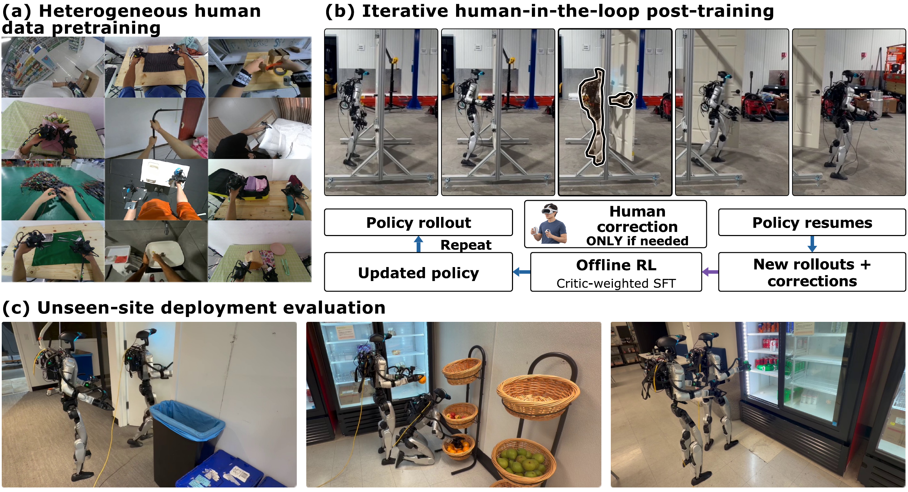

Data-Efficient Humanoid Loco-Manipulation Learning via Heterogeneous Human Data Pretraining and Iterative Offline RL

Abstract
Humanoid whole-body loco-manipulation is usually learned from teleoperated robot data, which is commonly known to be costly to collect and hard to scale. Human data offers a far cheaper and far more diverse option for robot skill learning, but due to the existence of the visual and kinematic gap between humans and humanoids, researchers have long struggled to make use of those scaled data already collected in bulk. Those data are also recorded in different formats, so that different datasets have very different observation spaces and action spaces. In this work, we propose a new policy training recipe for humanoid whole-body manipulation, in which we pretrain our policy by co-training a large amount of human data that are processed into the same action space, and post-train the policy with human-in-the-loop iterative offline RL. Our key insight is that a large amount of human data in the wild provides distribution coverage for the policy to learn how to accomplish the whole-body manipulation task, and a small amount of on-robot human-in-the-loop post-training shapes and sharpens that distribution, which will likely encourage more success in accomplishing tasks. We demonstrate how our recipe performs in selected whole-body manipulation tasks that capture what our system can actually achieve: our trained policy reaches a 20/20 success rate in the any-object pickup task with language conditioning, deployed in unseen environments throughout. Our policy also achieves 16/20 and 17/20 success rates on harder whole-body manipulation tasks like pushing and pulling door opening on doors with weight. The recipe works effectively well in tasks involving whole-body contact like whole-body carrying with torso and arm contact, and achieves a 16/20 success rate in held-out environments.